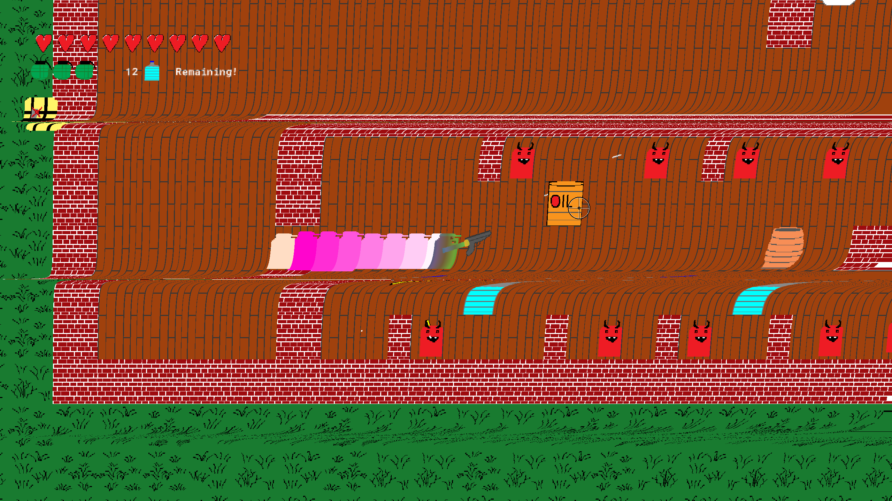

Project Overview
This project started from me just being curious how to make a top down shooter game. It was early in my studies and I figured I could use GameMaker to learn more about programming! I had also just started playing guitar, so please excuse
the horrible playing. At least the Volbeat songs I stole rock!
The game is meant to be played fast. The player has two main modes of fires, left click to shoot your whimpy pistol and right click to UNLEASH your shotgun! The shotgun also breaks some walls and opens doors. These doors then split and the fragments go
flying into the next room, killing anything they hit. The player can also choose between a frag grenade, flashbang and smoke grenade. They all have their uses and allow different ways of tackling the levels. When the shotgun just doesn't do the trick
for breaking down walls, the player also has a limited amount of C4 explosives at their disposal. Oh, and did I mention that the shotgun is so powerful that it sends YOU flying the other direction? Hmm, maybe that could be used to play even faster?
 In 2022 during our Level Design course, I also made a standalone open level. This specific level is shown in the video below.
In 2022 during our Level Design course, I also made a standalone open level. This specific level is shown in the video below.
If the video failed to load, here's a link (file size was too big for GitHub)
The Process
I had a single design pillar: "HELL YEAH!" and worked towards creating an experience that resonated with those words. This was achieved through the shotgun, breakable stuff, explosives and the Boost Cola (bullet time soda).
Following this meant that making the game feel "juicy" was very important, so I paid attention to sound, music and visual effects just as much as making the mechanics themselves feel great and juicy. This was the beginning of my work with VFX, which I
expanded upon in Heartbite.
 The Boost Cola was my way to further amp up the gameplay in an already high octane experience. Slowing things down to bullet time was a way of pacing the level and allowing the player to perform stunts they wouldn't otherwise be able to.
The Boost Cola was my way to further amp up the gameplay in an already high octane experience. Slowing things down to bullet time was a way of pacing the level and allowing the player to perform stunts they wouldn't otherwise be able to.
Non linear arenas
In the open level, that I made upon revisiting the game in 2022, was deliberately different from the other levels. It was open and longer. It also mattered more in which order you did things. I also experimented with different non-linear layouts for the "arenas", which
I'll briefly cover next.
The above image is an overview of the entire map.
The above arena is a combination of a "battlefield" layout and "nodes". The player is to push through enemy lines, in a battlefield fashion. But I also divided the battlefield into a couple of smaller nodes, for the player to be able to methodically approach the arena at
their own pace.
The above image shows a concentic layout, simply allowing the player to work their way around and into the center of the arena.
This is a combination of a concentric layout and nodes. The nodes are generally placed in a way that allows the player to work their way around and into the center.
This is a combination of a concetric and cross layout, meaning the arena is split in the way of a cross, while also allowing the player to work around and into the center.
 This is a symmetrical layout, and allows the player to pick either the lower or upper part first to clear, or to simply weave inbetween them at their own pace.
This is a symmetrical layout, and allows the player to pick either the lower or upper part first to clear, or to simply weave inbetween them at their own pace.
Guiding the player
In the open level I wanted to coax the player into learning that they can use the shotgun to destroy certain elements of the enviornment. I did this through placing objects such as weapons, ammo and health kits behind bushes (that are breakable) in proximity to fights, so that players might even accidentally break some bushes and see that it works. Below are two examples of this. I also tried a daring way to teach players that they can also break interior walls. I did this by intentionally creating an arena that doesn't flow well, so players would feel like they wanted to break some walls to traverse the area better. Hopefully, they would also see that the walls reacted to (or broke down) from the shotgun shells hitting them in the very tight space. The blue boxes are trigger boxers, ignore them. This method is daring, and I would be careful to use it again. With proper playtesting however, the method can be tweaked to work well.
Lessons learned
The main lesson I learned from this project was to pace my levels. "HELL YEAH!"" all the way through quickly becomes too much. And if action is already maxed out, where do you go from there? I used the Boost Cola and the final Boss level to try and pace things better,
but in the original project I believe the pacing wasn't good enough. When I revisited the game in 2022 to make the open level I had pacing in mind and I think that the level just feels better to play because of it.
Another thing I learned from this project (which was also incorporated upon my revisit) was to create more of a mechanical story arch. Starting out with every weapon in the game can be overwhelming and doesn't leave space for the game to progress. In the open level
I placed new weapons through out the level, creating a sense of progression.
